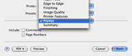

Stampare elenchi di parole
- Per stampare l'elenco di parole delle pagine selezionate, seleziona Archivio > Stampa.
- Per scegliere se includere commenti o numeri di pagina, seleziona ProVoc nel menu a tendina della finestra di stampa (il penultimo elemento prima di Sommario):
